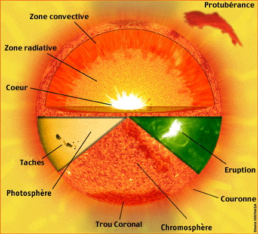

Une étoile est une énorme boule de gaz très chaud qui produit énormément d’énergie. Et cette énergie émerge de la surface sous forme de lumière .
Le soleil est une énorme boule de gaz très chaude qui represente l'objet le plus gros du Système Solaire. c’est une etoile jaune naine Il contient plus de 99.8% de la masse totale du Système Solaire.comme il represente une etoile naine jaune de la séquence principale du diagramme de Hertzsprung-Russell de type G2-V.
Le Soleil est aujourd'hui vieux d'environ 4,6 milliards d'années. Il s'est formé par l'effondrement gravitationnel d'une nébuleuse sur elle-même.
Il est l'étoile centrale de notre système planétaire, autour duquel tournent, dans l'état actuel de nos connaissances, 8 planètes, 5 planètes naines et des millions d'astéroïdes.
Aujourd'hui, la composition chimique du Soleil est de 75% d'hydrogène et 25% d'hélium en masse (92.1% d'hydrogène et 7.8% d'hélium en nombre d'atomes) ; il contient également quelques métaux (0.1%).
STRUCTURE
Au centre du Soleil se trouve le noyau où ont lieu les réactions thermonucléaires. La température est de 14 000 000 K et la pression de 150x10^9 . Le noyau mesure 1/4 du rayon du Soleil. Toute la chaleur émise par le Soleil provient de cette zone.
La zone de radiation ou zone radiative se situe approximativement entre 0.25 et 0.7 rayon solaire. La température est de 2 000 000 K. Dans cette zone, il n'y a pas de convection thermique.
La tachocline est une couche épaisse d'environ 3 000 kilomètres qui sépare la zone de radiation de la zone de convection.
La zone de convection ou zone convective s'étend de 0.7 rayon solaire du centre à la surface visible du Soleil. La température y passe de 2 000 000 K à 5 800 K. C'est selon un mouvement vertical, par convection, que la chaleur est conduite vers la photosphère.
La photosphère est la surface visible du Soleil. C'est une partie externe de l'étoile qui produit entre autres la lumière visible. La photosphère a une épaisseur d'environ 400 kilomètres. Sa température moyenne est de 6 000 K. Des taches noires apparaissent à sa surface, appelé les taches solaires (Sunspots), et sont à 3 800 K (elles apparaissent noires du fait de leur différence de température avec les régions avoisinantes). Ces taches solaires peuvent être très larges, jusqu'à 50 000 km de diamètre.